Install IIS
1. Open Server Manager
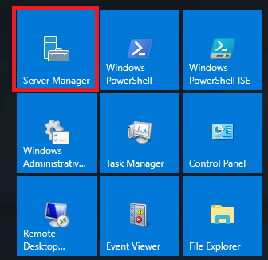
2. Click the “Add roles and features” text.
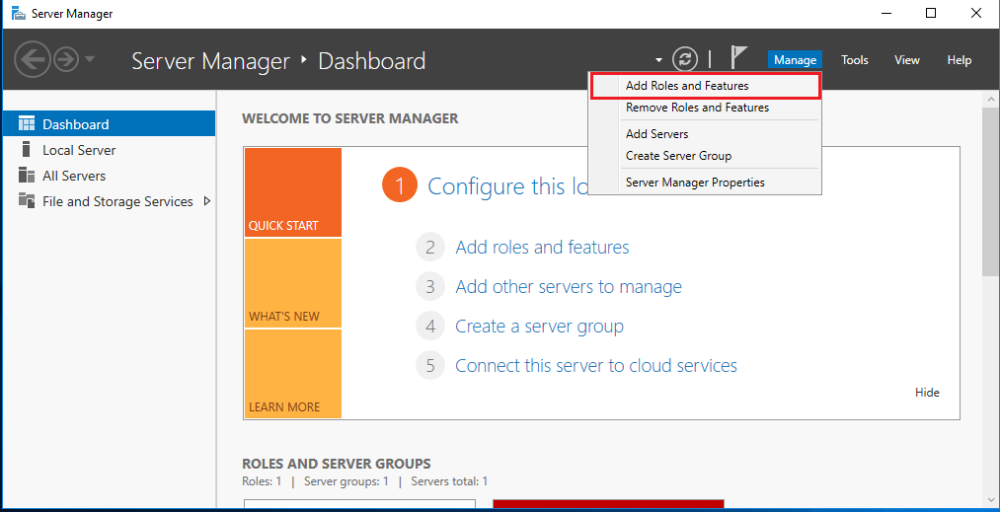
3. Before you begin
On the "Before you begin" window, click the Next button. 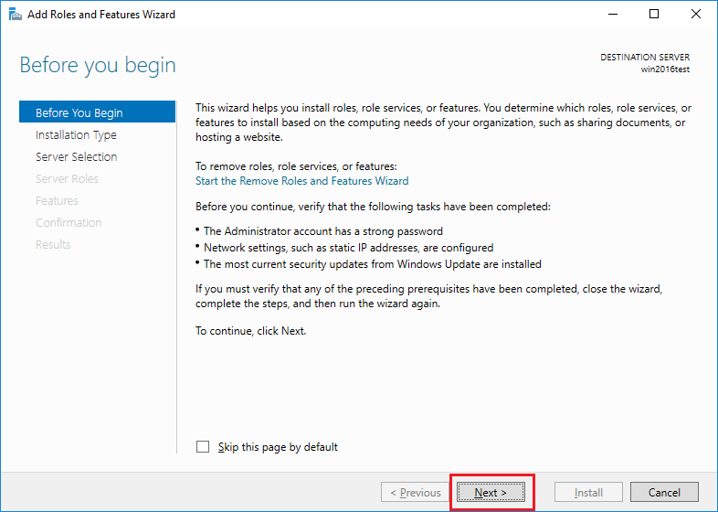
4. Installation Type
On the "Select installation type" window, leave “Role-based or feature-based installation” selected and click Next. 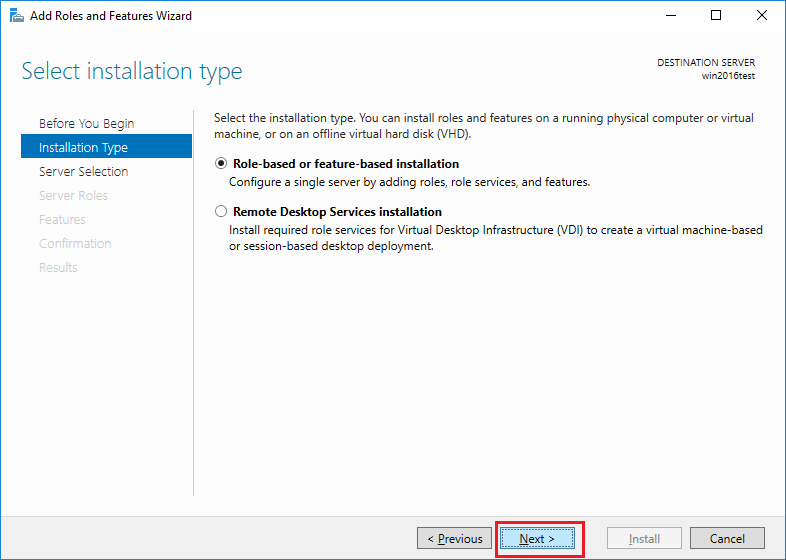
5. Server Selection
As we're installing to our local machine, leave “Select a server from the server pool” with the current machine selected and click Next.
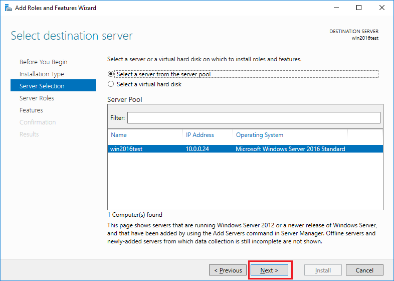
6. Server roles
From the "Select server roles" window, check the box next to “Web Server (IIS)”.
When additional features and feature wizard window pop up, click the “Add Features” button.
Click Next after back to "Select server roles" window
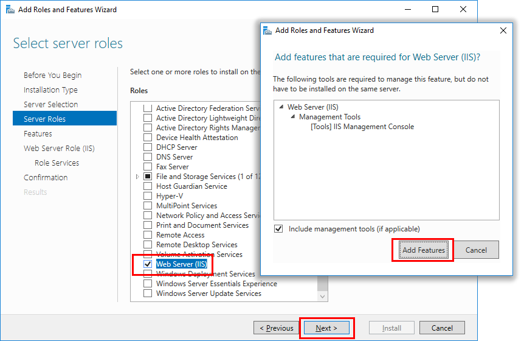
7. Features
In the "features" window, Click ".NET framework 4.6 features", check "ASP.NET 4.6" and "WCF Services" - "HTTP activation".
When additional features and feature wizard window pop up, click the “Add Features” button.
Click Next after back to "features" window
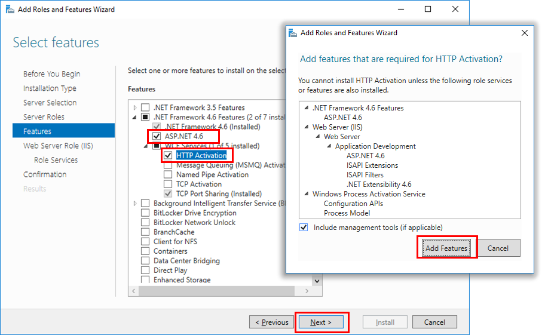
8. Web Server Role (IIS)
Click Next on the “Web Server Role (IIS)” window. 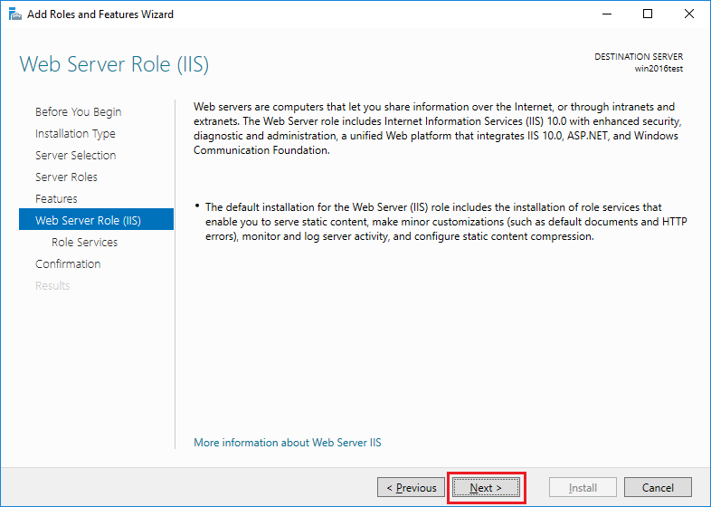
9. Select role services
In the "Select role services" window, Check "ASP.NET 4.6" under "application development" . Click Next. 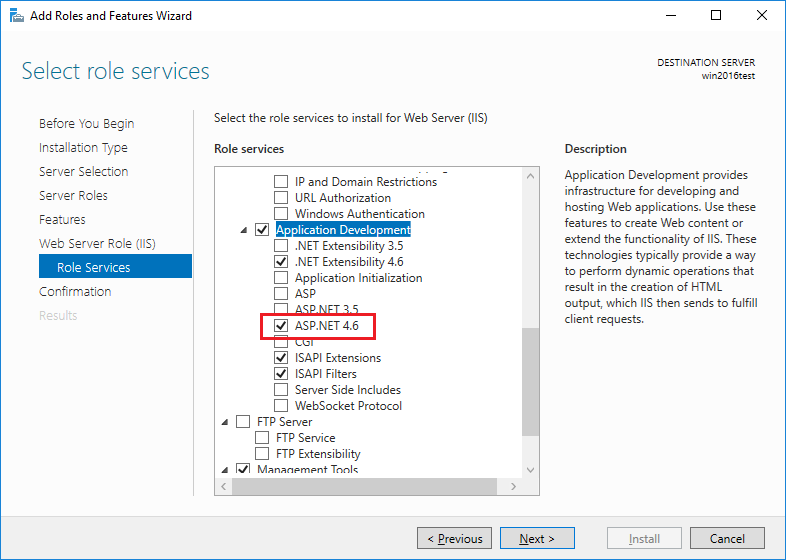
10. Confirmation
Finally on the “Confirm installation selections” window , review the items that are to be installed and click Install. 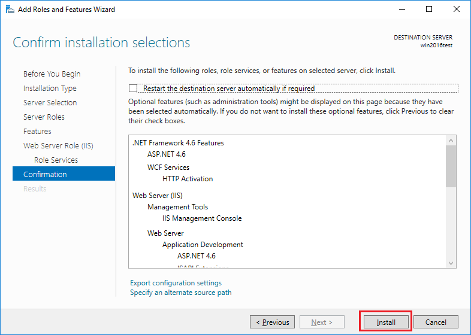
11. Result
Once the installation has succeeded, click the close button. 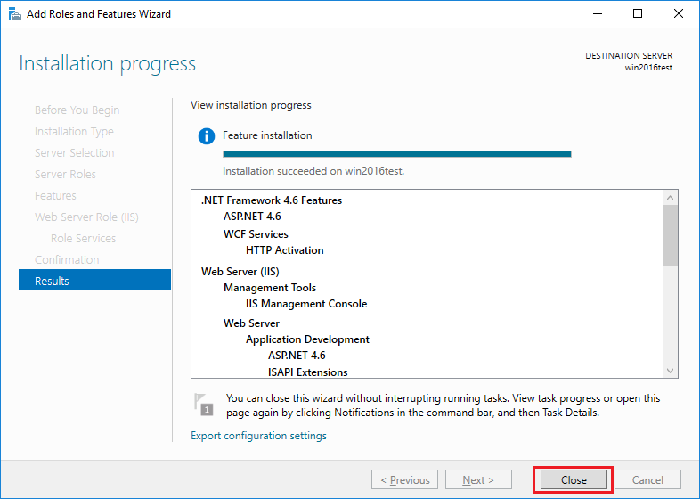
12. navigate example page
We can perform test by opening up a web browser and browsing to the server that we have installed IIS on. You should see the default IIS page.